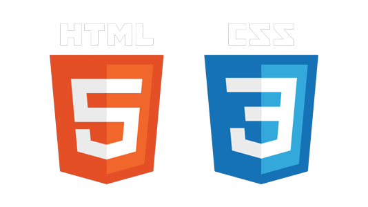
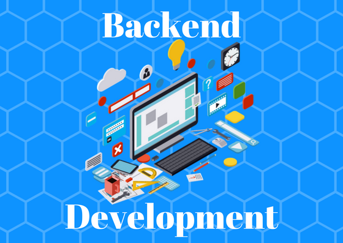

1. HTML and CSS
Begin with the fundamentals of HTML (Hypertext Markup Language) and CSS (Cascading Style Sheets). Learn about the structure, layout, and styling of web pages. Understand responsive design principles for creating websites that adapt to different screen sizes. Utilize CSS frameworks like Bootstrap to streamline the development process.
2. JavaScript
Learn JavaScript, the programming language of the web. Understand the basics of variables, data types, operators, and control structures. Explore DOM manipulation for dynamically updating web pages. Learn about event handling, asynchronous programming, and AJAX (Asynchronous JavaScript and XML).

3. Front-End Frameworks
Dive into front-end frameworks like React, Angular, or Vue.js. Choose one framework and become proficient in it. Understand component-based development and how to build reusable UI components. Learn about state management, routing, and handling data in a front-end framework.

4. Back-End Development
Gain knowledge of server-side programming languages such as Python, Node.js, or Ruby. Learn about back-end frameworks like Django (Python), Express.js (Node.js), or Ruby on Rails. Understand RESTful APIs (Application Programming Interfaces) and how to design and consume them. Learn about authentication, security, and database integration on the server side.
5. Databases
Learn about relational databases such as MySQL or PostgreSQL. Understand concepts like tables, relationships, SQL queries, and indexing. Explore non-relational databases like MongoDB or Firebase for NoSQL data storage. Learn about database modeling, optimization, and data retrieval techniques.

6. API Integration
Learn how to integrate with external APIs (Application Programming Interfaces). Understand REST and SOAP APIs and how to make requests to them. Explore authentication mechanisms like OAuth and API keys. Learn how to handle API responses and errors in your applications.

7. Version Control
Learn how to use a version control system like Git. Understand concepts like repositories, branches, commits, and pull requests. Explore platforms like GitHub or GitLab for collaboration and code hosting. Learn about branching strategies and resolving merge conflicts.
8. Deployment and DevOps
Understand the basics of server management and deployment. Learn about cloud platforms like AWS, Azure, or Google Cloud. Explore containerization with tools like Docker and container orchestration with Kubernetes. Learn about continuous integration and continuous deployment (CI/CD) pipelines.
9. Security and Performance
Learn about web application security best practices. Understand common vulnerabilities like cross-site scripting (XSS) and SQL injection. Explore techniques for securing APIs and handling user authentication and authorization. Learn about performance optimization techniques, caching, and CDN (Content Delivery Network).
10. Testing and Debugging
Learn how to write unit tests and integration tests for your code. Understand debugging techniques and tools for finding and fixing issues. Explore tools like Postman for testing APIs and browser developer tools for front-end debugging. Learn about test-driven development (TDD) and how to write effective test cases.